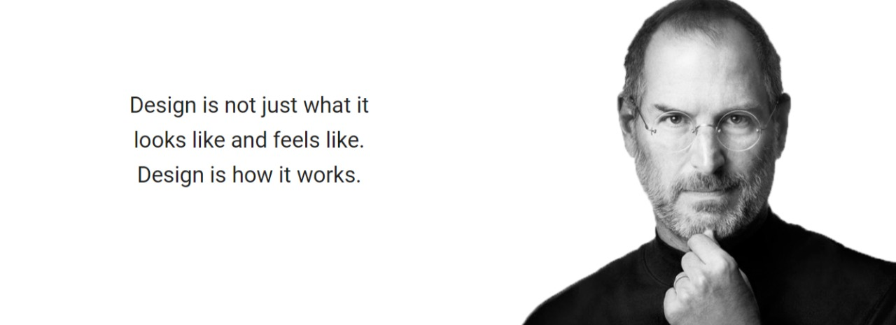
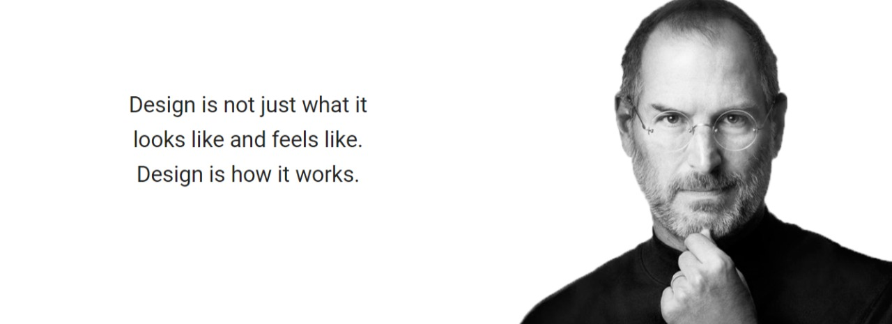

Steve Jobs, in full Steven Paul Jobs, (born February 24, 1955, San Francisco, California, U.S.—died October 5, 2011, Palo Alto, California), cofounder of Apple Computer, Inc. (now Apple Inc.), and a charismatic pioneer of the personal computer era.
Jobs was raised by adoptive parents in Cupertino, California, located in what is now known as Silicon Valley. Though he was interested in engineering, his passions of youth varied. He dropped out of Reed College, in Portland, Oregon, took a job at Atari Corporation as a video game designer in early 1974, and saved enough money for a pilgrimage to India to experience Buddhism.